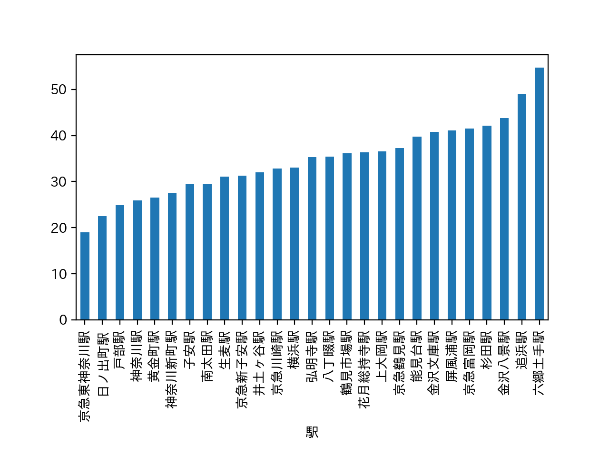

１班 発表内容
解説
授業内の発表で使用したパワーポイントは
こちらからダウンロード
１班のおすすめエリアは京急本線の戸部〜弘明寺駅周辺である。 ※画像は発表で使用したパワーポイントより
(21.11.8)班メンバーで一人暮らしをする3人（⿑藤、杉野、中澤）に物件探しで重視する/した条件をインタビュー（髙⼭）
→回答より駅までの徒歩の時間、移動時間、家賃がキーワードか。
(21/11/16)第７回の課題で各自が割り出したエリアについて情報共有
→路線を絞る：3人が挙げた京急本線を確認。一人暮らしを想定してワンルームを調べる。
＜パワーポイントより画像：合計時間・徒歩の時間・家賃＞
※ソースコードの参考：
- 斎藤さんの「デザイン演習Ⅰ・Ⅱ」のHPから。リンクはこちら（外部サイト）
- 元データを１つの路線のワンルームに絞ってから、駅ごとに平均の棒グラフを出すコード↓
（篠原さんから共有：例 家賃）
- import pandas as pd # データ分析に用いるライブラリ,padnasをpdと認識する
- import matplotlib.pyplot as plt # グラフ表示に用いるライブラリ
- pd.set_option('display.unicode.east_asian_width', True) # 表示のずれを少し緩和
- plt.rcParams['font.family'] = 'IPAexGothic' # グラフ表示におけるフォントの指定
- data_path = "./data.csv"
- df_data = pd.read_csv(data_path, encoding="utf-8-sig")
- keikyu = (df_data["路線"] == "京急本線") & (df_data["間取り"] =="ワンルーム")
- df_keikyu = df_data[keikyu]
- df_keikyu_mean = df_keikyu.groupby("駅").mean()
- df_keikyu_mean.loc[:, "合計時間"].sort_values().plot.bar()
- plt.subplots_adjust(bottom=0.3)
- plt.show()

その他、
- 横浜駅、みなとみらいエリアからの近さ
- 娯楽施設の豊富さ
- 電車の利便性
- 買い物のしやすさ
なども考慮し、戸部〜弘明寺駅のエリアに決定した。
メモ
- 京急の他に発表が多かったのは、移動時間や横浜・都心への交通の利便性、家賃相場から東急東横線の東白楽〜妙蓮寺駅周辺であった。
→私自身白楽周辺住みで、自身の第７回のデータ分析でもほぼ同じエリアが出たので納得。ただ、神大生にとってはありきたりといえばありきたりか。個人的には、飲食店が多くバスも多くてこの辺は助かる。
- データ分析の際は、実際にその状況に面した事を想定して、データに明示されていない点にも配慮したいと思った。
→治安を条件に挙げている班が多かった。治安面は何も考えておらず盲点であった。
（よくよく考えれば１班で挙げたエリアの問題点は、まさに日ノ出町〜黄金町周辺の治安である）
- グラフを紹介する際は、見やすさ（どこを見れば良いのか目印をつけるなど）に注意する。
前の画面に戻る